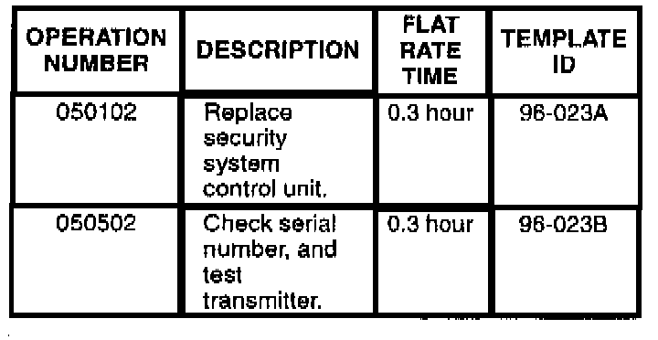
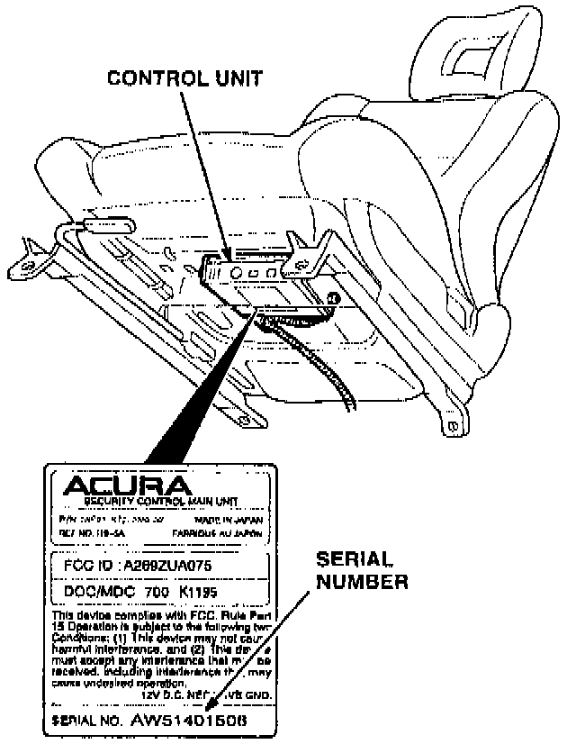
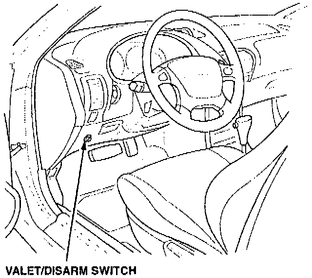
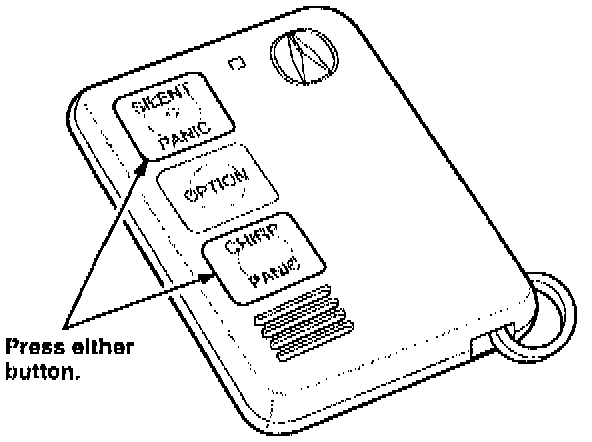

Security System Transmitter Inoperative/Range Too Short
June 18, 1996BULLETIN NO.
96-023
YEAR
1994-96
MODEL
INTEGRA
VIN APPLICATION
See VEHICLES AFFECTED
Security System Transmitter Does Not Work or Its Range Is Too Short
SYMPTOM
The range of the security system remote transmitter is too short (less than 30 feet) or the transmitter does not work at all.
PROBABLE CAUSE
A faulty security system control unit or a faulty transmitter.
VEHICLES AFFECTED
All with a security system control unit serial number from AW51400018 to AW51403004.
PARTS INFORMATION
Security System Control Unit:
P/N 08E51-ST7-2M002

WARRANTY CLAIM INFORMATION
In warranty:
The normal warranty applies.
Out of warranty:
Any repair performed after warranty expiration may be eligible for goodwill consideration by the District Technical Manager or your Zone Office. You must request consideration, and get a decision, before starting work.
Failed part: P/N 08E51-ST7-2M002
Defect code: 032
Contention code: B01
CORRECTIVE ACTION
^ Check the serial number of the security system control unit. Replace the control unit if it is within the affected serial number range (see VEHICLES AFFECTED).
^ Make sure the security system is not in Valet mode, then replace the transmitter's battery, and test the operation of the transmitter.
1. Check the serial number on the security system control unit. The control unit is mounted on the bottom of the driver's seat. You can check the serial number using a mirror.

2. If the control unit serial number is from AW51400018 to AW51403004, replace it (see PARTS INFORMATION). After replacing the control unit, reprogram all the transmitters for the vehicle. Transmitters that have not been reprogrammed will no longer work (see TRANSMITTER PROGRAMMING).
3. If the control unit is not within the affected serial number range, make sure the security system is not in Valet mode, then replace the battery in the transmitter, and check the system operation.
4. If the transmitter's range is still too short, check the system with the customer's other transmitter or a known-good transmitter. To program a known-good transmitter for this test, refer to TRANSMITTER PROGRAMMING.
5. Replace the original transmitter if the system works with the customer's other transmitter or the known-good transmitter. To program a new transmitter, refer to TRANSMITTER PROGRAMMING.
TRANSMITTER PROGRAMMING

1. Turn the ignition switch on, then immediately press and hold the valet/disarm switch to enter the programing mode. Continue to hold the switch throughout the procedure. (The switch is located on the dashboard lower cover.)

2. When the LED on top of the steering column begins to flash, press and release the "silent" button or the "chirp" button on the transmitter. If you need to program more than one transmitter, press the "silent" button or "chirp" button on each transmitter within ten seconds of pressing it on the first transmitter. (You can program up to four transmitters per vehicle.)
3. Release the valet/disarm switch to exit the programming mode.